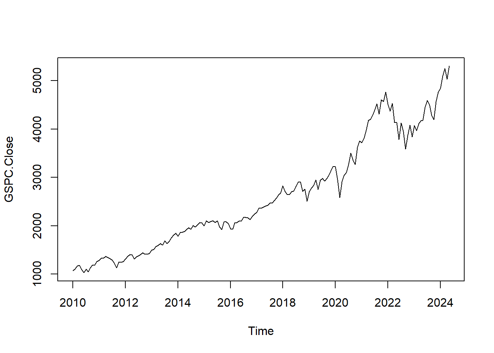

Capítulo 2 Desarrollo del proyecto
Para la obtención de los indices de S&P500 usaremos la biblioteca quantmod, esta es una herramienta en R que proporciona funciones para la descarga, manejo y análisis de datos financieros. No almacena ni proporciona datos financieros en sí misma, sino que se basa en diversas fuentes de datos para obtener información del mercado.
# Cargamos los datos del S&P 500
sp500_returns <- getSymbols("^GSPC", from = "2010-01-01", to = Sys.Date())La función getSymbols() descarga los datos del índice S&P 500 desde la fuente de datos especificada y los almacena en un objeto llamado “GSPC”.
## GSPC.Open GSPC.High GSPC.Low GSPC.Close GSPC.Volume GSPC.Adjusted
## 2010-01-04 1116.56 1133.87 1116.56 1132.99 3991400000 1132.99
## 2010-01-05 1132.66 1136.63 1129.66 1136.52 2491020000 1136.52
## 2010-01-06 1135.71 1139.19 1133.95 1137.14 4972660000 1137.14
## 2010-01-07 1136.27 1142.46 1131.32 1141.69 5270680000 1141.69
## 2010-01-08 1140.52 1145.39 1136.22 1144.98 4389590000 1144.98
## 2010-01-11 1145.96 1149.74 1142.02 1146.98 4255780000 1146.98A continuación, realizaremos una conversión de datos a zoo (Z’s Ordered Observations) y ts (Time Series). Un objeto zoo es una serie temporal ordenada que consiste en un vector de datos con una marca de tiempo asociada a cada observación. Esto permite que las observaciones estén indexadas por fechas o por otro tipo de marca de tiempo, mientras un objeto ts es una serie temporal que representa un conjunto de observaciones regularmente espaciadas en el tiempo, como datos mensuales, trimestrales o anuales. Se caracteriza por tener un vector de datos y un vector de fechas o periodos de tiempo.
#Conversión a Formato de Serie de Tiempo
## GSPC.Open GSPC.High GSPC.Low GSPC.Close GSPC.Volume GSPC.Adjusted
## ene. 2010 1116.56 1150.45 1071.59 1073.87 90947580000 1073.87
## feb. 2010 1073.89 1112.42 1044.50 1104.49 84561340000 1104.49
## mar. 2010 1105.36 1180.69 1105.36 1169.43 103683550000 1169.43
## abr. 2010 1171.23 1219.80 1170.69 1186.69 116741910000 1186.69
## may. 2010 1188.58 1205.13 1040.78 1089.41 127662780000 1089.41
## jun. 2010 1087.30 1131.23 1028.33 1030.71 110106750000 1030.71
## jul. 2010 1031.10 1120.95 1010.91 1101.60 94778110000 1101.60
## ago. 2010 1107.53 1129.24 1039.70 1049.33 85738250000 1049.33
## sept. 2010 1049.72 1157.16 1049.72 1141.20 79589450000 1141.20
## oct. 2010 1143.49 1196.14 1131.87 1183.26 89536270000 1183.26
## ...
## ago. 2023 4578.83 4584.62 4335.31 4507.66 86840820000 4507.66
## sept. 2023 4530.60 4541.25 4238.63 4288.05 73482980000 4288.05
## oct. 2023 4284.52 4393.57 4103.78 4193.80 83519460000 4193.80
## nov. 2023 4201.27 4587.64 4197.74 4567.80 80970570000 4567.80
## dic. 2023 4559.43 4793.30 4546.50 4769.83 81530670000 4769.83
## ene. 2024 4745.20 4931.09 4682.11 4845.65 81737880000 4845.65
## feb. 2024 4861.11 5111.06 4853.52 5096.27 82066930000 5096.27
## mar. 2024 5098.51 5264.85 5056.82 5254.35 86299510000 5254.35
## abr. 2024 5257.97 5263.95 4953.56 5035.69 81747170000 5035.69
## may. 2024 5029.03 5139.12 5011.05 5127.79 12850820000 5127.79#Imagen data agrupada por mes
A continuación, realizaremos el proceso de descomposición estacional a la serie temporal utilizando la función decompose(), la cual separa la serie temporal en tres componentes: tendencia, estacionalidad y residuos. Almacenaremos el resultado de esta operación en el objeto GSCP_month_decomp.
# Descomposición de la data agrupada por mes
suppressWarnings({
GSCP_month_decomp <- decompose(GSPC_month$GSPC.Close)
})# Establecemos el diseño de la ventana de gráficos en tres filas y una columna
par(mfrow=c(2,1))
plot(GSCP_month_decomp$trend, main = "Tendencia")
plot(GSCP_month_decomp$seasonal, main = "Estacionalidad")
En la grafico anterior podemos observar que la tendencia de los indices S&P500 es de incrementalidad, con periodos de estacionalidad de cada 2 años aproximadente.
## integer(0)